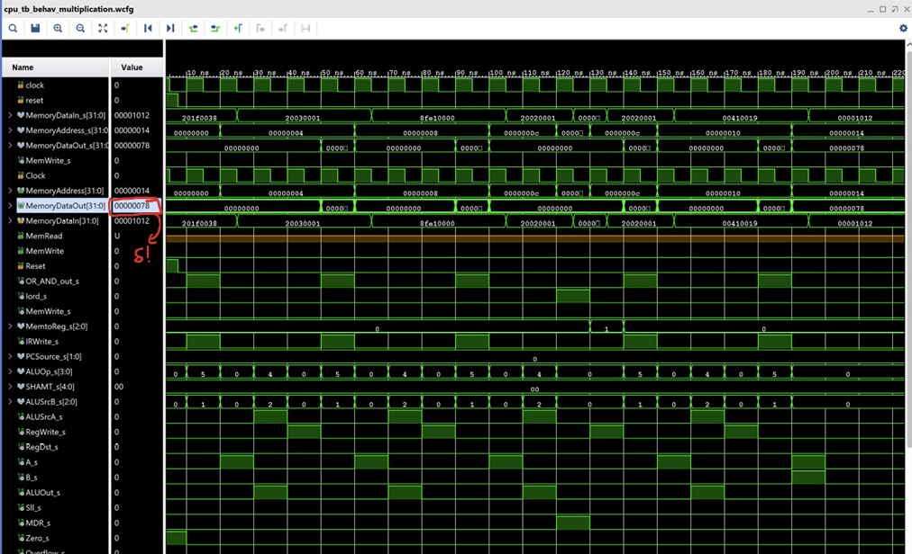

Back to Projects
Computer Architecture
FPGA
VHDL
Digital Design
32-bit MIPS CPU (Multi-Cycle)
Multi-cycle MIPS32 processor implemented in VHDL with FSM-based control unit, external memory interfacing, and validation on Zynq FPGA hardware.
32-bit
Architecture Width
FSM
Control Strategy
FPGA
Hardware Validated
Project Overview
A complete multi-cycle MIPS32 processor designed from scratch in VHDL, synthesized and validated on Xilinx Zynq FPGA hardware. The project spans RTL design, simulation, synthesis, and hardware testing — covering the full digital design workflow.
Architecture
- Multi-cycle datapath: Instructions execute over multiple clock cycles — fetch, decode, execute, memory access, writeback — sharing hardware resources across stages rather than using dedicated pipelined units.
- FSM-based control unit: A Moore FSM drives control signals cycle-by-cycle, transitioning between states for each instruction class (R-type, load/store, branch, jump).
- ALU: Supports arithmetic (ADD, SUB, ADDI), logical (AND, OR, SLT), shift, and comparison operations with a zero-detection output for branch control.
- External memory interface: Interfaces with Zynq block RAM (BRAM) for instruction and data memory — requires careful address and timing alignment for synchronous reads.
- Register file: 32 × 32-bit general purpose registers with simultaneous dual-read and single-write capability, with $0 hardwired to zero.
Verification Strategy
- Tcl simulation testbenches: Automated VHDL testbenches driven by Tcl scripts in Vivado simulator — testing each instruction with expected register file and memory state assertions.
-
C/C++ MIPS cross-compilation: Programs compiled with
mips-elf-gcc, loaded into Zynq BRAM via memory initialization files, and executed on hardware — output verified against expected register dumps. - Waveform analysis: Control signal traces validated in Vivado to confirm FSM state transitions matched the intended cycle diagrams.
Challenges Overcome
- Synchronous BRAM timing caused a one-cycle read latency that required inserting an extra wait state in the fetch FSM state — discovered through waveform analysis.
- Branch resolution required forwarding the computed PC to the instruction register a cycle early, handled by careful FSM state ordering rather than a dedicated forwarding unit.
Tech Stack

Instruction Support
R-type (ADD, SUB, AND…)
I-type (ADDI, LW, SW)
Branch (BEQ, BNE)
Jump (J, JAL, JR)
Shifts (SLL, SRL)
Compare (SLT, SLTI)